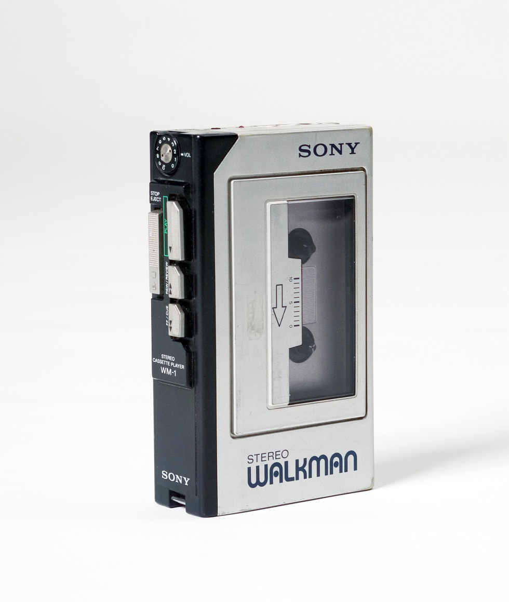

Sony Walkman Models
-
Sony Walkman Model- 1
Model 1 is the first-generation Walkman that started it all. It features a compact design, headphone jack, and cassette tape storage. A true classic!
View More -
Sony Walkman Model- 2

Model 2 introduced improved battery life and sound quality. It became a favorite among music lovers and established the Walkman as an essential device.
View More -
Sony Walkman Model- 3
Model 3 featured a more stylish design and additional features, such as FM radio support and a lightweight form factor, making it even more convenient for users.
View More